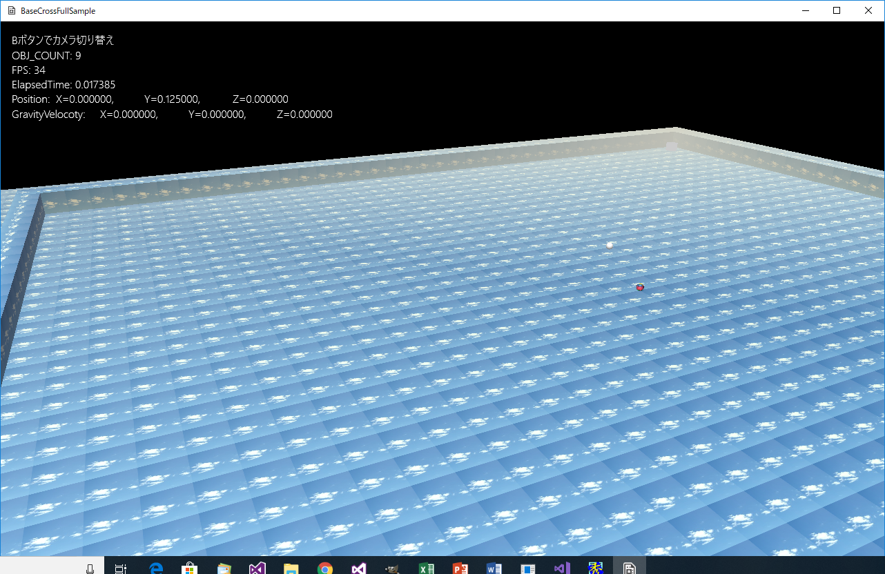

【１】フルバージョン
１２．Update系の操作
１２０８．演出カメラとオブジェクトカメラ
このサンプルはFullSample208というディレクトリに含まれます。BaseCrossDx11.slnというソリューションを開くとDx11版が起動します。
このサンプルはDx12版はありません。
実行結果は、まず以下のような画面が出ます。

図1208a
ここから自動的にカメラが動き、右奥の赤いブロックを見せます。

図1208b
その後、カメラは中央を見るようになり、プレイヤーを動かせるようになります。
図1208c
プレイヤーを動かしていくと、プレイヤーの後ろの上方に、プレイヤーを追いかける白い球体があると思います。
この球はカメラマンです。
初期状態では、他のサンプルでも実装されているMyCameraが実装されていますが、Bボタンを押すと、その白い球がカメラになります。もう一度Bボタンを押すと、カメラはMyCameraに戻ります。
このカメラをBaseCross64ではオブジェクトカメラと称しています。
以下がオブジェクトカメラにした画面です。
図1208d
オブジェクトカメラの状態では、スティックは左スティックのみ有効です。
ビューのインスタンスを保持する
さて、他の主なサンプルでは、カメラはGameStage::CreateViewLight()関数で作成し、サンプルを実行している間は切り替わることはありませんでした。しかしこのサンプルではカメラを切り替えるために、切り替えるビューをGameStageで保持します。
複数のカメラを保持することも可能ですが、カメラのポインタ（shared_ptr）は、BaseCross64ではビューが管理するために、このほうが理論上正しいと言えます。
さて、GameStage::CreateViewLight()関数は以下のようになります。
void GameStage::CreateViewLight() {
//OpeningCameraView用のビュー
m_OpeningCameraView = ObjectFactory::Create<SingleView>(GetThis<Stage>());
auto ptrOpeningCamera = ObjectFactory::Create<OpeningCamera>();
m_OpeningCameraView->SetCamera(ptrOpeningCamera);
//MyCamera用のビュー
m_MyCameraView = ObjectFactory::Create<SingleView>(GetThis<Stage>());
auto ptrMyCamera = ObjectFactory::Create<MyCamera>();
ptrMyCamera->SetEye(Vec3(0.0f, 5.0f, -5.0f));
ptrMyCamera->SetAt(Vec3(0.0f, 0.0f, 0.0f));
m_MyCameraView->SetCamera(ptrMyCamera);
//ObjCamera用のビュー
m_ObjCameraView = ObjectFactory::Create<SingleView>(GetThis<Stage>());
auto ptrObjCamera = ObjectFactory::Create<ObjCamera>();
m_ObjCameraView->SetCamera(ptrObjCamera);
//初期状態ではm_OpeningCameraViewを使う
SetView(m_OpeningCameraView);
m_CameraSelect = CameraSelect::openingCamera;
//マルチライトの作成
auto PtrMultiLight = CreateLight<MultiLight>();
//デフォルトのライティングを指定
PtrMultiLight->SetDefaultLighting();
}
m_OpeningCameraView、m_MyCameraViewそしてm_ObjCameraViewはGameStageのメンバ変数としてポインタを保持します。
オブジェクトカメラのためのGameObject
オブジェクトカメラはGemeObjectとしてオブジェクトを定義し、それにカメラを設定する手法です。m_OpeningCameraViewとm_ObjCameraViewで実装しているカメラはオブジェクトカメラを使用しています。
ですのでGemeObjectの動きを客観的に実装することで、カメラの動きを定義できます。
映画のカメラマンの動きを映画監督が指示できるような形です。
オープニングカメラ
m_OpeningCameraViewに実装されているカメラはCharacter.h/cppに実装されている、OpeningCameramanクラスに結び付けられています。OpeningCameramanクラスはステートを持っています。
ゴール地点（赤いブロック）まで移動するステートと、プレイヤーを見るところまで移動するステート、そしてオープニングが終了するステートです。
それぞれステートの初期化関数で、カメラの位置とカメラの見る場所を、移動する前、移動する後について値を設定します。
以下はOpeningCameramanToGoalStateにおける値の設定です。
void OpeningCameramanToGoalState::Enter(const shared_ptr<OpeningCameraman>& Obj) {
Obj->ToGoalEnterBehavior();
}
void OpeningCameraman::ToGoalEnterBehavior() {
m_StartPos = Vec3(-20.0f, 10.0f, -20.0f);
m_EndPos = Vec3(18.0f, 2.0f, 10.0f);
m_AtStartPos = Vec3(-10.0f, 0.0f, 0.0f);
m_AtEndPos = Vec3(18.0f, 0.0f, 18.0f);
m_AtPos = m_AtStartPos;
m_TotalTime = 0.0f;
}
bool OpeningCameraman::ExcuteBehavior(float totaltime) {
float ElapsedTime = App::GetApp()->GetElapsedTime();
m_TotalTime += ElapsedTime;
if (m_TotalTime > totaltime) {
return true;
}
Easing<Vec3> easing;
auto TgtPos = easing.EaseInOut(EasingType::Cubic, m_StartPos, m_EndPos, m_TotalTime, totaltime);
m_AtPos = easing.EaseInOut(EasingType::Cubic, m_AtStartPos, m_AtEndPos, m_TotalTime, totaltime);
auto ptrTrans = GetComponent<Transform>();
ptrTrans->SetPosition(TgtPos);
return false;
}
ですので、以下の呼び出し方が可能です。
void OpeningCameramanToGoalState::Execute(const shared_ptr<OpeningCameraman>& Obj) {
if (Obj->ExcuteBehavior(5.0f)) {
Obj->GetStateMachine()->ChangeState(OpeningCameramanToStartState::Instance());
}
}
このように、ゴールまで移動してプレイヤーまで戻ることができたら、OpeningCameramanEndStateにステートが変更されますので、
void OpeningCameramanEndState::Enter(const shared_ptr<OpeningCameraman>& Obj) {
Obj->EndStateEnterBehavior();
}
void OpeningCameraman::EndStateEnterBehavior() {
auto ptrGameGtage = GetTypeStage<GameStage>();
ptrGameGtage->ToMyCamera();
}
void GameStage::ToMyCamera() {
auto ptrPlayer = GetSharedGameObject<Player>(L"Player");
//MyCameraに変更
auto ptrMyCamera = dynamic_pointer_cast<MyCamera>(m_MyCameraView->GetCamera());
if (ptrMyCamera) {
ptrMyCamera->SetTargetObject(ptrPlayer);
//m_MyCameraViewを使う
SetView(m_MyCameraView);
m_CameraSelect = CameraSelect::myCamera;
}
}
ObjCameraのためのGameObject
ObjCameraのカメラマンはCameramanクラスです。Character.h/cppにあります。以下はそのOnUpdate()関数です。
void Cameraman::OnUpdate() {
auto ptrPlayer = GetStage()->GetSharedGameObject<Player>(L"Player");
auto playerPos = ptrPlayer->GetComponent<Transform>()->GetPosition();
auto ptrTrans = GetComponent<Transform>();
auto pos = ptrTrans->GetPosition();
Vec3 span = pos - playerPos;
float nowLen = length(span);
span.normalize();
span *= m_ToPlayerLen;
Vec3 target = playerPos + span;
target.y = playerPos.y + 1.0f;
Easing<Vec3> easig;
Vec3 v;
if (nowLen < 1.5f) {
v = easig.EaseIn(EasingType::Cubic, pos, target, 0.7, 1.0f);
}
else {
v = easig.EaseIn(EasingType::Cubic, pos, target, 0.3f, 1.0f);
}
ptrTrans->SetPosition(v);
}
プレイヤーそのものの動きは、MyCameraの場合もCameraman（ObjCamera）の場合も変わりません。左スティックでカメラの逆方向に相対的に移動します。
カメラの切り替え
カメラの切り替えはGameStage::OnPushB()で行います。GameStageにも、InputHandlerは実装することが可能です。
void GameStage::OnPushB() {
switch (m_CameraSelect) {
case CameraSelect::myCamera:
{
ToObjCamera();
}
break;
case CameraSelect::objCamera:
{
ToMyCamera();
}
break;
}
}
ToObjCamera()関数は以下のようになります。
void GameStage::ToObjCamera() {
auto ptrPlayer = GetSharedGameObject<Player>(L"Player");
//ObjCameraに変更
auto ptrCameraman = GetSharedGameObject<Cameraman>(L"Cameraman");
auto ptrObjCamera = dynamic_pointer_cast<ObjCamera>(m_ObjCameraView->GetCamera());
if (ptrObjCamera) {
ptrObjCamera->SetCameraObject(ptrCameraman);
ptrObjCamera->SetTargetObject(ptrPlayer);
//m_ObjCameraViewを使う
SetView(m_ObjCameraView);
m_CameraSelect = CameraSelect::objCamera;
}
}
プレイヤーの移動の制限
このサンプルは、最初のオープニングの時はプレイヤーは操作できなくしてあります。その処理は以下のように記述しています。
void Player::OnUpdate() {
auto ptrGameStage = dynamic_pointer_cast<GameStage>(GetStage());
if (ptrGameStage->GetCameraSelect() == CameraSelect::openingCamera) {
return;
}
//コントローラチェックして入力があればコマンド呼び出し
m_InputHandler.PushHandle(GetThis<Player>());
MovePlayer();
}